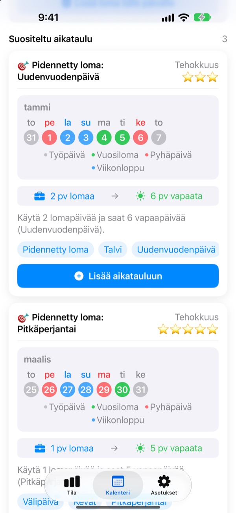
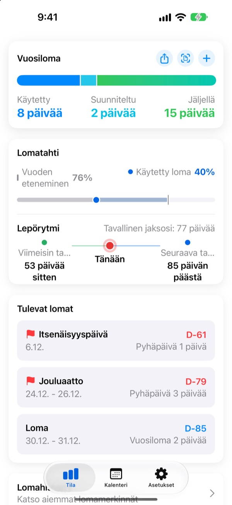
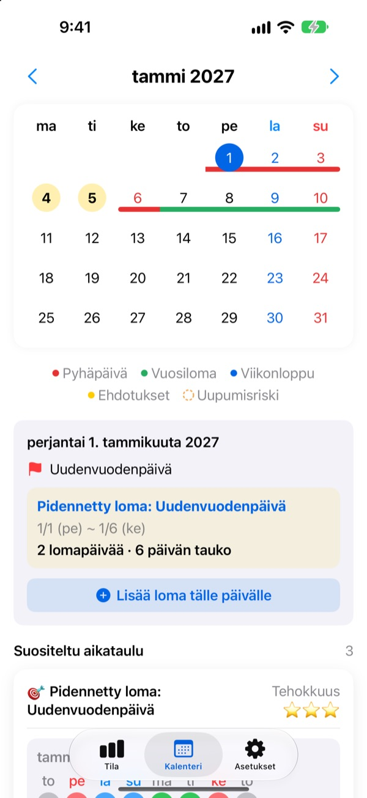
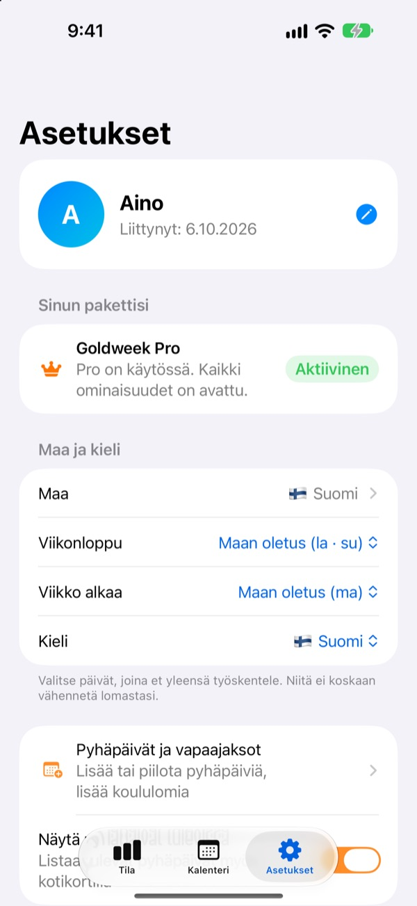

Vähän lomapäiviä,
pitkät vapaat
Goldweek yhdistää pyhäpäivät ja viikonloput ja näyttää tarkalleen, minä päivinä kannattaa pitää lomaa, jotta vapaata tulee mahdollisimman pitkään. Ei enää kalenterin selaamista ja laskemista.
Ilmainen ladata. Lomien seuranta ja ehdotukset pysyvät ilmaisina.

Kuinka pitkälle lomasi riittää?
Valitse, montako lomapäivää voit pitää. Näet pisimmät vapaat, jotka niillä saa tulevien pyhien ympärille.
Kyllästyttääkö päivien laskeminen kalenterista?
Torstai on pyhä, otatko perjantain vapaaksi? Vai säästätkö päivän ensi kuun pitkään viikonloppuun? Tarpeeksi selattuasi otat vapaaksi minkä tahansa päivän, ja joulukuussa ylijääneet lomat katoavat. Goldweek laskee puolestasi ja näyttää päivät, joilla lomasi riittää pisimmälle.
Lomasi yhdellä silmäyksellä
Kaikki, käytetyt ja jäljellä olevat päivät yhdellä näytöllä. Vieressä näkyy, kuinka pitkällä vuosi on ja kuinka paljon lomaa olet käyttänyt, joten huomaat heti, säästätkö liikaa.
Jäljellä olevat päivät ja tulevat vapaat näkyvät widgetissä Koti-valikossa.

Merkitse vapaat suoraan kalenteriin
Pyhäpäivät, lomat ja ehdotetut välipäivät näkyvät kalenterissa väreinä. Napauta päivää lisätäksesi tai muokataksesi vapaata, myös puolikkaita päiviä, neljännespäiviä tai tunteja.
Aiemmat lomat tuot kerralla kuvasta, joka on otettu henkilöstöjärjestelmän näkymästä.

Sinun maasi, sinun työaikasi
Pyhäpäivät 42 maasta, Suomesta ja Pohjoismaista Eurooppaan, Aasiaan ja Amerikkaan. Jos pyhät vaihtelevat alueittain, valitset omasi. Puuttuuko maasi? Lisää omat pyhäpäivät.
Voit valita myös viikonlopun päivät, viikon ensimmäisen päivän sekä kiinteän työajan, osa-aikatyön tai vuorotyön.

Alkuun kolmessa vaiheessa
- 1
Kerro, missä työskentelet
Ensimmäisellä kerralla valitset maan ja montako lomapäivää sinulla on vuodessa.
- 2
Valitse ehdotus
Kalenteri-välilehdellä on ehdotettuja vapaita. Lisää ne, joista pidät.
- 3
Kirjaa lomasi
Napauta päivää tai tuo aiemmat lomat kuvasta.
Näin se lasketaan
- Koko päivä
- 1 päivä saldosta
- Puoli päivää
- 0,5 päivää
- Neljännespäivä
- 0,25 päivää
- Tunnit
- Sen päivän työtuntiesi mukaan
- Sairaus, virkavapaa, työmatka
- Ei vähennetä lomasta
- Bonusloma
- Ylimääräiset vapaat kuten pekkaset, kirjataan erikseen viimeisen käyttöpäivän kanssa (Pro)
Vuoden lomapäivät ja kuukauden, jolloin lomavuotesi alkaa, voit muuttaa milloin tahansa asetuksista.
Hyvä lepo on ilmaista. Suunnittelun hoitavat Plus ja Pro.
Ilmainen
- Kokonaiset, puolikkaat ja neljännespäivät sekä tunnit ja jäljellä oleva loma
- Pyhäpäivät 42 maasta, omat pyhät ja koulujen lomat
- Kaikki tämän vuoden ehdotukset, lisää enintään 3
- Vinkit levon väleistä, muistutukset ja widget
- Lisää loma kuvasta
- iCloud-varmuuskopio ja perheen kanssa jaettu aikataulu
Plus ja Pro
- Plus: Optimaalinen vuosisuunnittelija
- Plus: Rajattomasti ehdotuksia, myös viime ja ensi vuodelle
- Plus: Vie vapaat Kalenteri-appiin
- Pro: Kaikki Plussasta, bonusloma, vuosirajat ja siirrot lomatyypeittäin
- Pro: Koulun kalenterin tuonti ja kalenterin automaattinen tunnistus
- Pro: Yhteiset vapaat ja perheen merkkipäivät
Jokainen taso on saatavilla vuositilauksena tai kertaostona pysyvästi.
Vuositilaus uusiutuu automaattisesti, ellei sitä peru viimeistään 24 tuntia ennen jakson loppua. Hallitse tilauksia milloin vain kohdassa Asetukset > Apple-tili > Tilaukset.
Usein kysyttyä
Lomasaldoni ei täsmää.
Tarkista asetuksista, minä kuukautena lomavuotesi alkaa ja montako lomapäivää sinulla on yhteensä. Puolikkaat (0,5) ja neljännespäivät (0,25) vähennetään automaattisesti, eivätkä lomaan laskemattomat tyypit, kuten sairaus, virkavapaa tai työmatka, muuta saldoa. Jos se ei vieläkään täsmää, lähetä meille sähköpostia.
Lomani ei näy kalenterissa.
Peruttuja lomia ei näytetä kalenterissa. Tarkista merkinnän tila Lomien hallinnasta. Päivitys uusimpaan versioon voi myös auttaa.
Miten lisään bonusloman?
Avaa Lomien hallinta napauttamalla + Tila-välilehdellä ja käytä alareunan Bonusloma-osiota. Valitse tyyppi (pekkanen, palkintoloma, palautumisloma…), päivien määrä ja halutessasi viimeinen käyttöpäivä. Bonusloma pidetään erillään tavallisesta lomasta.
Maksoin, mutta mitään ei avautunut.
Napauta Palauta osto Asetukset-välilehden alareunassa. Osto palautetaan sillä Apple-tilillä, jolla olet kirjautunut App Storeen. Jos se ei auta, lähetä meille sähköpostia.
Katoavatko tietoni, jos poistan sovelluksen?
Tiedot ovat laitteella, joten sovelluksen poistaminen poistaa ne. Laita iCloud-varmuuskopio päälle, niin sinulla on kopio, jonka voit palauttaa myöhemmin.
Voinko lisätä omia pyhäpäiviä tai piilottaa niitä?
Kyllä. Asetusten kohdassa Pyhäpäivät ja vapaajaksot voit lisätä omia pyhäpäiviä tai piilottaa oletuksena olevia.
Mitä maita tuetaan?
Goldweekissa on 42 maan pyhäpäivät. Valitse maa asetuksista (ja alue, jos pyhät vaihtelevat alueittain), niin kalenteri päivittyy heti. Jos maatasi ei ole, lisää pyhäpäivät itse tai toivo sitä palautteella sovelluksesta.
Mihin tietoni tallennetaan?
Syöttämäsi tiedot pysyvät laitteellasi tai omassa iCloudissasi. Saamme vain nimettömiä käyttötilastoja, nimettömiä kaatumisraportteja ja palautetta, jonka itse päätät lähettää.
Kaikesta, mihin yllä ei vastattu, ideoista tai virheistä voit kirjoittaa osoitteeseen leeo@kakao.com. Vastaamme yleensä yhden tai kahden arkipäivän kuluessa.